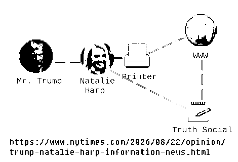
26. 9. 4
🧑🍳 오늘의 부엌 영상:
https://drive.google.com/file/d/1PR6q5ftk7Hsr0UOpGMydTmDBLYa7CLdR/view?usp=drivesdk
https://drive.google.com/file/d/1TbYtnAcTMz6C43v-yk-7mQcEX3FAu-58/view?usp=drivesdk
山口組と絆會の「特定抗争指定暴力団」の指定解除を決定…兵庫など８府県公安委
https://news.yahoo.co.jp/articles/2dd007e8168a29ae63cd9b859c5976028f118e16
조(曺)희대大法院長が早ければ今日「立場の発表」をするとのことですが、ここで注目されるのは大法院が欠員を埋めるための後任の選出にあたり、「推薦委員会」(추천위원회, 略して추천위)を構成し直して一から候補者の選出を行うのか、前回選出した候補者のうち政府(青瓦台)に提出されなかった者のうちの一名を選ぶのか、だそうです。もし推薦委員会から一からやり直す場合、後任の決定にかなり時間がかかることになるので金健希に対する宣告も遅れることになり得ます。法院内部の多数意見は推薦委員会の再構成が必要だというものだそうですが、記事の末尾にあるように「推薦委員会を新たに構成すれば3ヶ月位必要となるので、国民の迅速な裁判を受ける権利が侵害されないよう、既存の候補者から1名を選ぶ方法をとるべきだ」との専門家の意見もあるそうです。(다만 신속하게 대법관을 임명해야 한다는 측면에서 기존 후보를 대상으로 1명을 골라 제청해도 문제가 되지 않는다는 의견도 있다. 임지봉 서강대 법학전문대학원 교수는 "후보 추천위를 새로 구성해 추천을 받아 그중 1명을 제청해도 되고 기존 나머지 3명 중 1명을 제청해도 문제가 없다"면서도 "추천위를 새로 구성하면 석 달 정도 더 걸리니, 국민의 신속한 재판 받을 권리가 침해당하는 일이 없도록 기존 3명 중 1명을 빨리 제청하는 게 중요하다"고 했다) 「推薦委員会を新たに構成すれば3ヶ月位必要となる」というのが本当なら、その場合に12月頃まで大法院裁判官(대법관)の欠員が埋まらず、金健希の拘置所からの釈放が予定されている10月末まで全員合議体判決を延期する口実を大法院が手にしてしまうということになります。
조희대 대법원장(69)이 대법관 재체정 여부에 대해 이르면 4일 입장을 밝힐 예정이다. 법조계에서는 대법관 후보추천위원회를 재구성하고 노태악 전 대법관 후임 논의를 원점에서 다시 시작할 가능성이 높다는 관측이 나온다. (中略) 청와대는 대법관 추천위원회 회의 내용을 존중해 '최대한 신속히' 재제청 절차를 진행해달라는 입장이다. 추천위를 재구성하지 말고 손봉기 후보자를 제외하고 앞서 추천된 김민기 서울고법 고법판사(55·26기), 박순영 서울고법 고법판사(60·25기), 윤성식 서울고법 부장판사(58·24기) 등 3명 중에서 다시 임명 제청하라는 의미로 해석된다. 현행 법원조직법 제41조의2 제2항은 추천위를 대법원장이 대법관 후보자를 '제청할 때마다' 구성한다고 규정돼 있다. 또 추천위가 대법관 후보자를 추천하면 추천위는 해산된 것으로 본다고 정하고 있다. 조 대법원장은 기존 추천위가 해산됐다고 보면서도 추천위를 다시 꾸려야 하는지를 검토 중이다. (中略) 법원 내부에서는 법원조직법에 따라 추천위가 재구성돼야 한다는 의견이 우세하다. 수도권의 한 부장판사는 "추천위에서 추천한 기존 후보자 중에서 (대통령이) 원하는 사람을 대법관으로 올릴 때까지 반려한다는 거냐"며 "추천위를 새로 구성해야 한다"고 말했다. (中略) 다만 신속하게 대법관을 임명해야 한다는 측면에서 기존 후보를 대상으로 1명을 골라 제청해도 문제가 되지 않는다는 의견도 있다. 임지봉 서강대 법학전문대학원 교수는 "후보 추천위를 새로 구성해 추천을 받아 그중 1명을 제청해도 되고 기존 나머지 3명 중 1명을 제청해도 문제가 없다"면서도 "추천위를 새로 구성하면 석 달 정도 더 걸리니, 국민의 신속한 재판 받을 권리가 침해당하는 일이 없도록 기존 3명 중 1명을 빨리 제청하는 게 중요하다"고 했다.
조희대 대법원장, 이르면 오늘 입장 표명…법조계는 추천위 재구성 무게
https://www.news1.kr/society/court-prosecution/6279213
제가 가까이에 있는 LAWSON에 안 갔기 때문에 났을 수 있는 소문은 이미 해소되었을 것이니까 절약을 위해서 오늘부터 다시 안 가기로 합니다. (편의점에서 사는 음식은 슈퍼마켓에 있는 것보다 비쌉니다) 아마 낚시는 실패되었을 거예요~
私が昨日お見せした京都訪問の動画および夕食の動画( https://drive.google.com/file/d/1gNydW9TJeGMIAWeWGfkdVKCYQ2gyG_hO/view?usp=drivesdk )はいずれも例の方がこれを利用して場当たり的な噂を流す事を狙ったものです。以前もこのような試みにより噂が沈静化したことがあったようなのでまた行ってみました。ただ今回もWAONの利用履歴が出揃うまでは効果がないでしょうし、ミニストップでの利用履歴が照会可能になるには3-4日必要ですので先に種明かしをしておきます。ミニストップでの利用履歴が照会可能になるのに3-4日かかることについては過去の文章( https://anissatta.github.io/l/page2.html )の26. 8. 20の部分に記しています。その後で利用したローソンの方の利用履歴が先に出てくるでしょうが、これはローソンがミニストップより高速なのだと考えれば腑に落ちるかと思います。あと3日間はこれが原因で迫害を受けるでしょうが、明日、明後日は土日ですからまだましだろうと思います。(土日は恐らく人々が自らの休日を過ごすことに集中しようとするからか、あるいは普段仕事をしていて私についての噂をよく知らない人々が多く来られるからか、平日よりは迫害が穏やかです)
まず昨日の京都訪問の動画には「9. 3 교토 방문 (난 어떤 개 사료를 먹은 거야? 물론 이건 낚△인데)」というタイトルが付けられていますが、この「낚△」ないし「ㄴㅅ」とは何なのかと疑問に思われた方もおられるかと思います。これは「낚시」(釣り)という単語を、ハングルをご存知でない方々が分からないようにいじったものです。このように今回の動画が釣り(これは言うまでもなく私が噂を流している人を釣って、晒し者にするということです)であることは最初から宣言されていたのですね。
京都訪問の当初のねらいは、私が冷蔵庫の内容等を通して培養していた私が死にかけているといった噂を不特定多数の人々の前に自らを晒すことによって覆すことと、私が子供を恐れて引きこもっているといった噂が流れていた場合にそれも覆すことでした。また京都訪問そのものについて、噂を流している方がこれを素材に新しい虚言を追加し、自らを窮地に追い込むのではという期待感も当初からあるにはあったのです。(噂を流している方は私が瀕死状態であるという噂をたよりにホラを吹いていたはずなので、今回慌てて何か新しい噂を流した可能性は充分にあると思います)
噂を流している方が京都の地理に詳しくない場合に今回の動画に適当な解釈を加えて噂を流した可能性もありますから、各部分について説明してみます。まず冒頭の「고속」(高速)ですが、これは京都河原町駅近くの商店街の中にある「고속터미널」(高速ターミナル)という店の看板の一部です。次に出てくる献血車が前に停められている建物は京都市役所です。ハングルの看板は今出川駅の周辺だったと思いますが、すぐに見つかると思います。その近くには白峯神宮があり、最初に行ったスーパー(生鮮館なかむら堀川店)があります。チュモッパ(주먹밥)を食べた後水火天満宮(だったと思いますが)でお祈りをしていますが、ここで唱えているのは発音はおかしいでしょうが「대법원이 시월 말까지 김건희에 대해 유죄판결을 내리기를 바라겠습니다」(大法院(最高裁判所)が10月末までに金健希に対し有罪判決を下すことを願います)です。その後でまた別の生鮮館なかむらに行っていますが、私はこのように通常の状況では絶対に起きえない利用履歴を作ることで私が噂への対策という、明確な目的のもと京都に行ったのだと分かるようにしています。その後、最初に行った生鮮館なかむらに寄ったもののほぼ真っ直ぐに烏丸駅に向かって歩いています。名前は思い出せませんが、菅原道真の誕生地だとかそんな表示のある神社にて先と同じ文句を唱えています。ミニストップは烏丸駅を越えた少し奥にあります。ドッグフードのネタは当初はリアルタイムに利用履歴が出るCoGCaカードを利用して、生鮮館なかむらで行う予定でした。そこで例えば100円のドッグフードがあればそれを値札とともに撮影し、次に同じ価格のおにぎりか何かを買うという具合です。レシートを公開するのを遅らせればドッグフードの映像と、100円の利用履歴とで私がドッグフードを買ったと錯覚させる事が出来るので後は公園で嘔吐するふりをする動画でも付け足せばよいかと考えていました。私がミニストップで買ったのは下記のバナナ牛乳(바나나 우유)でしたが、これの利用履歴が出てくるのは先に述べた通り3-4日後となります。
https://drive.google.com/file/d/1V696QJ50u4UUfhZxPoeBpV7SZhkHrk2Q/view?usp=drivesdk
https://drive.google.com/file/d/172fVphohz0hSmRozG4ZNWY6DckR7bsdU/view?usp=drivesdk
夕食の動画についても簡単に説明してみます。これは私がドッグフードを食べ腹痛を起こしているという前提のもと、誰かが私に激辛プルダック炒め麺とチャミスルの夕食をとることを強要しているという物語です。(昨日通った道沿いには紫式部が源氏物語を書いたという寺院のような施設がありました) ただこの動画にはこれが物語であると分かるようにある仕掛けを加えています。食事中に私が携帯電話を手にする場面がありますが、ここに「New Voicemail」とあるのは着信があったという通知画面ではなく、着メロの選択画面なのです。皆様もお持ちのiPhoneの言語設定を英語にしてSettings -> Sounds -> New Voicemailと選択してみて下さい。私がここで視聴しているのは「Opening」という着メロです。私は噂を流している方は英語が分からないだろうと思いこのようなことをしました。(その後で私が激辛ラーメンスープを飲み干しているのは私が送った脅迫ボイスメールの賜物である、とその方は述べたかも知れません) 携帯電話で「ワンワン」というサウンドを再生している場面もありますが、この時使用していたのは韓国語の辞書アプリであり、再生していたのは「왕」(王)の発音です。韓国映画についての本の目次を見ている場面もありますが、これも特定の映画を指してはいないにも関わらず、ある錯覚を強化する効果があっただろうと思います。
私は上記のような文章を噂を流している方が虚言をあちこちに撒き散らすのを待ってから公開した方が良いかと考えていましたが、既に(噂を流している)例の方が異常なことを言っているといった見方をされている方がおられるような気がするのと、京都の地理やiPhoneの画面等については事実を把握されている方も多くおられるはずなのでそういった情報がSNSに回れば本人が前言を撤回したり、何か誤魔化したりする可能性が高まると思いこのタイミングで公開することにしました。(思ったよりうまく行っていないかも知れません)
오늘도 이런 시각에 일어났으니까 좀 작업을 한 후 다시 자고 오전 오 시경에 일어나고 오전 9시경에 마르야스에 갑니다.
9月2日のWAON利用履歴(ローソン高槻川添一丁目, 183円)も照会可能になりました。ところで私が昨日ミニストップでどの商品を買ったかについては、実際に店舗を訪問して各商品の税込価格を調べてみればお分かりになるかと思います。参考に昨日私がこのミニストップの後に行ったローソンで受け取ったレシートを貼り付けます。(レシートにはWAON残高が記されていますから、これで金額が算出できるでしょう)
- ID: 6900 1701 1448 2524
- PIN: 080734
https://www.waon.com/wmUseHistoryInq/init.do
https://drive.google.com/file/d/1R5QY38EAfD824WiefXH_MqchK2EdGVRx/view?usp=drivesdk
https://drive.google.com/file/d/1POv2jXSmazhMkbxR2obwGgXdKM5UvdVF/view?usp=drivesdk
26. 9. 3
저에 대한 소문을 낼 수 있는 여러 인물을 들 수 있네요. 저의 아버지와 의모, 그로네코 야마토에 있는 쓰레기, 제가 전에 있던 회사 중 아마존 이외에 있던 사람들, 제가 전에 가던 병원 직원, 인터넷에 살고 있는 주민들 등등입니다. 당신이 그런 사람들이 어떤 의도로 소문을 내고 있는지 이해하시면 다시는 사기를 당하진 않으실 것인데요. 다만 제가 오래 이같은 말을 해 왔는데도 당신은 의심하셨을 것 같습니다. 저는 더 좋게 ㄴㅅ를 하는 줄을 습득해야 할 것입니다. 멍멍! 멍멍! 다만 그런 시도가 실패되면... 멍멍! 멍멍! 저는 언제. 멍멍! 멍멍! 다시. 멍멍! 멍멍! 당신을. 멍멍! 멍멍! 만날 수 있을 거야?
💫 💫 9. 3 교토 방문 (난 어떤 개 사료를 먹은 거야? 물론 이건 낚△인데) 💫 💫 💫
https://drive.google.com/file/d/1BEHqyMk0wRrYWXewTmOB4gxb4plf1Aw9/view?usp=drivesdk
(아침) 지금 저의 컴퓨터는 수리 중에 있으니까 웹사이트에는 낼 수가 없는데요 조희대 대법원장이 오늘 업무에 복귀했다네요.
조희대 대법원장이 부친상을 치른 뒤 3일 업무에 복귀하면서 청와대의 대법관 후보자 재제청 요구에 대한 입장을 밝힐지 주목된다.
조희대 대법원장 부친상 후 첫 출근…대법관 재제청 입장은
https://www.yna.co.kr/view/AKR20260902173400004
조(曺)희대大法院長の「立場の発表」は今日はとりあえず無かったようです。
조희대 대법원장이 부친상을 마치고 업무에 복귀하면서 청와대의 대법관 후보 재제청 요구와 관련해 내부 논의 경과를 들어보고 공식 입장을 밝히겠다고 말했습니다. 조 대법원장은 오늘 출근길에서 부친상 기간에 업무 관계로 논의한 바가 없다며 이같이 밝혔습니다. 청와대는 앞서 지난달 28일 손봉기 대구지방법원 부장판사의 대법관 후보자 제청을 두고 "절차적 완결성을 갖추지 못했다"며 재제청을 요구했습니다.
조희대 “재제청 논의 경과 듣고 입장 낼 것”
https://news.kbs.co.kr/news/mobile/view/view.do?ncd=8653824
昨日自室内で呟いたように私は彼女とアマゾンの物流センターで出会ったという経緯からも、一般人として彼女に再会しなくてはなりません。ヤクザか分かりませんが、そのような仕事を継ぐか継がないかはご両親にお会い出来て初めて出てくる話だと思います。ただこういった事を特に外国の方々が理解しておられるのか私にはよく分かりません。
오늘은 평소보다 조금만 빨리 마르야스에 가 봅니다. 그리고 컴퓨터의 OS를 재(再)인스톨해야 하기 때문에 오늘 저녁까지 웹사이트 갱신을 중단합니다. 내야하는 소식이 있을 경우 다음 파일을 통해 알려 드리겠습니다.
https://drive.google.com/file/d/1x30P2qT6XxLC33Q0764Hg0zCdo4Q21-z/view
🧑🍳 오늘의 부엌 영상:
https://drive.google.com/file/d/1I72Wvc2F-twOcXSHYBcUxsCLwWqNd23_/view?usp=drivesdk
https://drive.google.com/file/d/1otxCDYuWuCMKiEHBIviMgSWHWTEuCzm4/view?usp=drivesdk
EU·나토, 러시아 압박 강화…"우크라 지원 흔들림 없다"
https://mobile.newsis.com/view/NISX20260903_0003774009
私がトランプ大統領について述べないので何らかの噂が流れているのかも知れませんが、私は下記のような投稿もハープさんがなされているのだと思うと本当にトランプ大統領がおかしな人物なのかが分からないのです。ただ噂の対策として下記記事を引用してみます。ところで私がここで述べている「何らかの噂」というのは誰かが私を管理しているのではないかという噂ですが、クロネコヤマトの契約社員について言えばよく分かりませんがあんな所で働いている位ですから、私を「管理」するような経済的余裕は無いのではないかと思います。そのような事が出来るのは私が知る限り韓国のLeeさんだけです。
President Trump on Wednesday floated changing the name of the Strait of Hormuz to the Trump Strait, despite the waterway not having a single owner. “Now that we have it under U.S.A. control, should we change the name Hormuz Strait to TRUMP STRAIT??? Like America itself, it would be ‘hotter’ than ever before!” Trump wrote on Truth Social.
Trump floats renaming Strait of Hormuz after himself
https://thehill.com/homenews/administration/6066413-trump-claims-hormuz-control/
先の뉴스1の記事には「노태악前大法官の後任として손봉기が、이흥구大法官の後任として김성수がそれぞれ指定されていた」が、「李在明大統領は손봉기について任命を見送った」とあります。下記の先月出た記事によると노태악前大法官は3月に既に退任しており、이흥구大法官も今月7日に退任するとのことです。이흥구大法官が退任後、李在明大統領が任命を見送らなかった(?)김성수がすぐに就任する可能性もありますが、現時点で既に退任している노태악前大法官の後任がまだ決まっていないのでいずれにせよ1名欠員の状態は続くのだと思います。大法官が1名欠員しているからといって全員合議体が機能しないのかというと、どうもそれも違うような気もします。ただ欠員が存在しない状態で大法院が全員合議体での審理をせず、金健希に対する判決も出さないとすれば、大法院が100%悪いということになるので私はよく分かりませんが李在明大統領は손봉기を任命しておくべきだったのではないかという気がしています。
지난 3월 노태악 전 대법관이 퇴임한 데 이어 다음 달 7일 이흥구 대법관도 6년 임기를 마치고 퇴임한다.
(8. 26) 조희대, 퇴임까지 9개월 ‘가시밭길’…서면제청 논란에 탄핵론까지[세상&]
https://mbiz.heraldcorp.com/article/10852916
이상한 꿈을 꾸어서 이런 시각에 일어났습니다. 좀 작업을 한 후 다시 자고, 오전 오 시경에 다시 일어나고 오전 9시경에 마르야스에 가기로 합니다.
これをご覧になった方がおられるかは分かりませんが、私のWAON利用履歴の内9月1日 午後の分(ローソン高槻川添一丁目, 163円)がようやく照会可能になりました。同日朝の180円の支払いについては一日早く照会可能になりましたから、これで昨日私が説明したことが理解されただろうと思います。(とはいえ同じようなWAONの使い方をまたすれば、100%の確率でまたお祭り騒ぎが発生するはずですが)
- ID: 6900 1701 1448 2524
- PIN: 080734
https://www.waon.com/wmUseHistoryInq/init.do
これについては日本語できちんと説明しなかったのでまだ理解されていない方もおられるでしょうが、現在韓国で起きていることは大法院(最高裁判所)の裁判官の欠員を埋めるプロセスを巡っての政府(青瓦台)と大法院との戦いであり、この戦いが長引きいつまで経っても大法院裁判官(대법관)の欠員が充足されないために、全ての大法院裁判官が関与する全員合議体という、現在金健希のいくつかある事件の内一つを担当している大法院の部門がこの事件について判決を出せないという状態が続いています。私はこれまで大法院側の조(曺)희대大法院長がこの問題について責任があるという見方のみを紹介してきましたが、政府というか李在明大統領が悪いという見方も存在し、下記記事はそれに関するものです。記事の末尾にこれまでの経緯が書かれてありますが、조(曺)희대大法院長は2名の欠員について後任となる裁判官を指定し、李在明大統領に(書面で)提出していました。ただ李在明大統領(青瓦台)はそのうち1名について任命同意案を国会に提出しないとし、大法院に候補者を再指定するよう要求していました。(청와대는 지난 28일 춘추관 브리핑에서 "손봉기 후보자에 대해 국회 임명동의안을 제출하지 않기로 했다"며 조 대법원장에게 대법관 후보자 재제청을 요청했다) 今週조(曺)희대大法院長が立場を発表するというのはこの候補者の再指定についてのことです。もし仮に李在明大統領が大法院が提出した後任候補を受け入れていれば、金健希やその後全員合議体にての審理が決定された한덕수等の内乱事件についての判決も早期に出すことが可能であったかも知れません。下記記事に登場する弁護士らは大統領には大法院が提出した後任候補を拒絶する権利は無いと述べていますが、これは以前紹介した記事の見解とは正反対となっています。この点については私はよく分かりませんが。
사법연수원 14기 출신 법조인 84명이 대통령의 대법관 후보자 재제청 요구와 관련해 "헌법에 근거 없는 재제청 강요를 중단하라"라고 촉구했다. (中略) 이들은 "대법원장이 7개월여 기간 동안 사전협의가 이뤄지지 못해 부득이 서면으로 대법관 후보자를 제청한 것에 대해 절차적 완결성 미비를 이유로 대통령이 그 임명동의안을 국회에 제출하지 않고 다른 후보자의 재제청을 요구했다면 이는 결코 가볍게 볼 일이 아니다"라고 지적했다. 이어 "대통령에게 (대법관) 임명권이 있다고 해서 후보자 선택권까지 있는 것은 아니다"라며 "대법원장의 제청권은 대통령의 임명권을 보조하는 하위 권한이 아닌 헌법이 사법부 독립을 위해 직접 부여한 독립된 권한"이라고 했다. 대통령과 대법원장 간 사전 협의 관행이 깨진 것에 대해서는 "헌법이나 법률이 요구하는 제청의 효력 요건은 아니다"라고 했다. 나아가 "대통령이 특정 후보자를 선호해 그 사람이 제청될 때까지 다른 후보자를 거부한다면 이는 사실상 대통령이 제청권과 임명권을 함께 행사하는 것"이라고 했다. 일부 여권에서 제기된 '제청 반려권 입법' 움직임과 관련해서도 "헌법이 대법원장에게 직접 부여한 권한을 법률로 축소할 수 없다"며 우려했다. 이 같은 입법 시도가 "제도개선이 아닌 헌법상 권력 배분을 흔드는 '입법권 남용'이라는 비판을 피하기 어려울 것"이라는 쓴소리도 했다. (中略) 한편 조희대 대법원장은 지난달 18일 노태악 전 대법관(64·16기)의 후임으로 손봉기 대구지법 부장판사(61·22기)를, 이흥구 대법관(63·22기)의 후임으로 김성수 서울고법 부장판사(58·24기)를 이재명 대통령에게 각각 서면으로 임명 제청했다. 청와대는 지난 28일 춘추관 브리핑에서 "손봉기 후보자에 대해 국회 임명동의안을 제출하지 않기로 했다"며 조 대법원장에게 대법관 후보자 재제청을 요청했다. 대법원은 재제청 및 대법관후보추천위 재구성 여부 등에 대한 후속 절차를 검토해 이번 주 내로 공식 입장을 낼 방침이다.
(9. 2) 사법연수원 14기 84명 李에 "헌법 근거 없는 재제청 강요 중단하라"
https://www.news1.kr/society/court-prosecution/6277966
26. 9. 2
만약 오는 시월에 이태원에서 한국현대무용진흥회가 '2026 K-Wave Dance Festival'를 개최한 후 김건희가 구치소에서 석방되면 저는 대법원이 청와대에서 독립된 일이라고 하는데도 역시 정부나 현 정부가 지지하는 나라들을 지지하지 않기로 하고 당신을 다시 만날 때까진 뉴스를 보지 않을 것입니다. 대한민국의 사법은 정말로 이상할 수도 있는데요. 그런데 윤 전 대통령의 아버님은 그가 삼일절 또는 광복절에 한 연설을 하자 작고하셨네요. 저는 물론 조희대 대법원장의 아버님이 작고하신 건 그분이 하신 일과는 무관한다고 알고 있지만 왠지 모르지만 생각났습니다. 지금 이상한 소문이 퍼지고 있는 건 이날이 김건희의 생일이기 때문일지도 모르지만 저는 물론 그 문제의 시월이 올 때까지 살아 갈 것입니다.
WAONについてこれまで繰り返し述べてきたことが全く理解されていないようであり、またこれを利用して噂を流す人々もいるようなので、もう一度説明します。まず私が提示している下記の履歴照会サイトは皆様が普段使われている、ご自身が登録したパスワードを使ってログインするタイプのWebサイトや、WAONステーションの履歴表示機能とは原理が全く異なるものです。結論から述べると皆様が利用されているこういったサービスはWAONの決済系のシステムを利用したものであり、利用履歴が即時反映される反面どこで利用したかの情報は出て来ないはずです。私が提示している下記の履歴照会サイトはWAONの売上伝票に関わるシステムを利用したものであり、リアルタイムには履歴が反映されませんが、店舗を表すコード名が各取引毎に付与されています。
https://www.waon.com/wmUseHistoryInq/init.do
私がここで述べているのは要するに皆様が店舗でWAONを使用する際に、この決済系のシステムと売上伝票のシステムが別々に、同時に起動しているということです。この2つの内、明らかに重要性の高いシステムは決済系のシステムですから、これはリアルタイムに反映されます。(もし決済系のシステムがリアルタイムに反映しなければ、残高が正確に表示されませんから困ったことになりますね) 一方売上伝票のシステムはイオン内部での会計処理に関わるものですから、そこまでのスピードは必要なく、また恐らくWAONが登場する以前のオフコン等のシステムが残っている可能性もあるかと思います。こちらの方では残高の表示も出来ません。
私が以前気になってWAONコールセンターに質問してみたところ、どうも各店舗から送信された伝票データがWAONセンターに到着してようやく例の履歴照会サイトにて確認が可能になるようなのですが、この確認が可能になるまでの期間は店舗を運営する会社によって異なるようです。私がこれまで観察した限りではデータの送信タイミング ないし 確認が可能になるタイミングは深夜11時ごろでした。つまり毎晩11時頃になると会社によって異なる期間に応じて履歴が反映されるということですが、この履歴の反映についての締め時間だけでなく、店舗での利用にもある締め時間があるようです。それは恐らくローソンに限ったものであり、午前8時頃だと思いますが、これを跨ぐと確認が可能になる日数が1日加算されてしまうようなのです。こういったことは口で言っても分からないでしょうから何かアニメのようなものを用いて説明しようかと考えたこともあります。ともあれ私はWAONのこのような性質を用いて何時でも自らが計画した期間にお祭り騒ぎを発生させることが出来ます。(一応書いておくと私がWAON番号を初めて公開したのは梨泰院惨事の後、買った物や食事の写真を公開するようになってからでした)
昨晩私が自室内で呟いた「梨泰院で10月に開催されるダンスパーティ」とは下記のことです。私はよく分からずにけしからんと言っていましたが、恒例の行事なのかも知れません。
한국현대무용진흥회, '2026 K-Wave Dance Festival' 오는 10월 3일 개최
https://classian.co.kr/ViewM.aspx?No=4206815
私が昨日'funny video'と題して自らの禿頭を利用した作品を公開したのはこれが拡散されて世界中のより多くの統一教会信者らの目に留まることを願ったものです。ただ今回の作品も国旗損壊罪にまつわる作品と同様に意図が理解されなかったり、例のクロネコヤマトの社員等が噂を流す上での材料となっていたかも知れません。韓鶴子が今日再拘束されなくなったことは教団の存続に益するある誤解を招き得ますから、これも押さえておく必要があります。(信者らの中には韓鶴子総裁が拘置所にいたという事実がフェイクニュースだと信じている方もおられるかと思います) 조(曺)희대大法院長についてのニュースから察せられる通り韓国の司法はどこかおかしいのですが、その原因の一つが統一教会であると思われるので私としては早くこれが弱体化して欲しいのです。ただこういった事は理解されないでしょうから、例のfunny videoは削除しておきます。
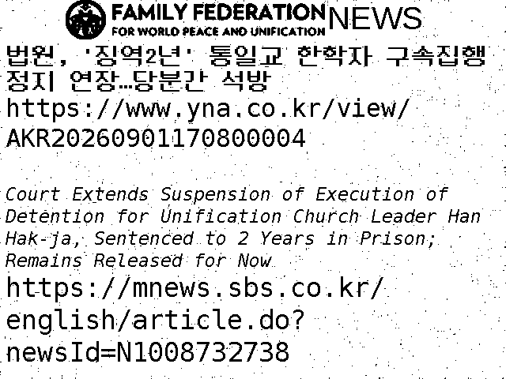
先日懲役2年を宣告された韓鶴子は本来であれば今日(2日)の夕には病院から再度拘置所に移される予定でしたが、裁判所はこれをまた延期したそうです。
윤석열 정부와의 정교유착 의혹으로 1심에서 징역 2년을 선고받은 한학자 통일교 총재에 대한 구속집행정지가 다시 연장됐습니다. 서울중앙지법은 오늘 한 총재 측이 낸 구속집행정지 신청을 인용했습니다. (中略) 한 총재는 어제 윤석열 정부 정교유착 의혹 1심에서 징역 2년을 선고받았지만, 내일 오후 6시 구속집행정지 기한이 만료될 예정이라 법정구속을 피했습니다. 이번에 연장된 한 총재의 구속집행정지 기간은 오는 30일 저녁 6시까지입니다.
(9. 1) 통일교 한학자, 실형 선고에도 수감 피해‥구속집행정지 재차 연장
https://imnews.imbc.com/news/2026/society/article/6848944_36918.html
(9. 1) 법원, '징역2년' 통일교 한학자 구속집행정지 연장…당분간 석방
https://www.yna.co.kr/view/AKR20260901170800004
Court Extends Suspension of Execution of Detention for Unification Church Leader Han Hak-ja, Sentenced to 2 Years in Prison; Remains Released for Now
https://mnews.sbs.co.kr/english/article.do?newsId=N1008732738
Court Extends Release of Unification Church Leader Sentenced to Two Years
https://en.sedaily.com/society/2026/09/01/court-extends-release-of-unification-church-leader
오늘은 정오(正午)경에 가까이에 있는 LAWSON에 가 봅니다. 여기에 살고 있는 사람들은 아직 WAON에 관한 일에 대해 이해하지 않은 것 같으니까 (그들은 죽을 때까지 이해하지 않을 거예요) 어제 오후에 받은 영수서 사진은 안 내지만 금액은 일백육십삼이었습니다.
私が金健希の大法院(最高裁)判決について述べたようなことについて疑問視している方は韓国の議員の中にもおられるようです。韓国の一般市民の方々は(10月末に金健希が釈放されるという)そんな事は起きるはずがないと楽観視されているのでしょうが、かなり深刻な問題だと思います。
조 원장은 2일 자신의 사회관계망서비스(SNS)를 통해 "김건희 사건은 대법원 선고기일 하루를 앞둔 지난 7월23일 전원합의체에 전격 회부됐다"며 "이례적이었다"고 밝혔다. 이어 "10월28일까지 전합 선고가 없으면 김건희는 구속기간 만료로 석방된다"며 "두 달 남았다"고 했다. 조 원장은 현재 대법관 2명이 공석이라는 점을 문제 삼았다. 그는 "통상 전합은 법원행정처장을 제외한 대법관 전체가 참석해야 열리는데 현재 2명이 결원 상태"라며 "두 달 안에 2명 전부가 충원될지 불투명하다"고 지적했다. 조 원장은 앞서 대법원 전원합의체가 이재명 대통령의 공직선거법 위반 사건을 유죄 취지로 파기환송한 판결을 거론하며 대법원에 대한 의구심을 나타냈다. 그는 "설마 하는 마음이지만 지난 대선 시기 최유력 후보였던 이재명 후보 사건에서 기존 법리를 바꿔 유죄 취지 파기환송 판결을 내려 이 후보에게 타격을 줬던 대법원"이라고 짚었다. 이어 "당시 경악했다"며 "조희대 대법원장 등 다수의견에 섰던 대법관들은 이재명 대통령 당선을 바라지 않았던 것은 분명하다"고 덧붙였다. 조 원장은 대법원이 이재명 정부 출범 이후 재판소원 도입과 대법관 증원 등 사법개혁에 반대해왔다는 점도 언급했다. 그는 이를 들어 "혹시 대법원이 전합 구성 미비를 이유로 판결을 못 하겠다고 결정해 두 달 후 김건희가 자유를 찾도록 해주는 것 아닌가"라며 "눈을 부릅뜨고 지켜봐야 한다"고 강조했다.
조국 "김건희, 10월28일까지 전합 선고 없으면 구속기간 만료로 석방"
http://www.snakorea.com/news/articleView.html?idxno=1047053
恐らく昨日の晩に私が自室内で呟いたことを元に何か噂を流した方がおられるのでしょうが、私がごく短期間のアルバイトを探すと呟いたのは恐らく10月頃には金健希に対する大法院(最高裁)判決が下るであろうという観測のもと、判決が下った場合に(約束通り)韓国に行くためのものです。そのような短期間の労働というのはもちろんクロネコヤマトにもあるのでしょうが、私はそのような所に行く気はありません。もう一度書いておくと噂を流していたと思われる契約社員(灰色の制服を着た社員)は関西ゲートウェイ(茨木にあるセンター)にて私が派遣社員として夕方から午後10時頃まで働いていた際に、クールでないフロアのA(アルファ)ブロックにいた方です。(Aブロックというのは縦搬送を行うエレベーターを起点としてトラックの発着場が並んでおり、その前にYMCとかそんな名前の梅田にあるという語学学校に通う外国人学生らが仕分け作業をするスペースがあるブロックです) 私が韓国のLeeさんと結婚した場合にどのような仕事をするのかは分かりませんが、場合によってはクロネコヤマトが困ることになるかも知れません。最近気になっているのはクロネコヤマトのドライバーの方々です。恐らく私が買い物等に出かける時刻は把握されていると思いますが、あまりに頻繁に見かけるので本来の業務指示を無視して私を偵察しに来ているのではないかとも思います。(今日見かけた運転手は私を衰弱した獲物を見るような目で見つめていました)
下記の記事によるとやはり조(曺)희대大法院長の身内の葬儀により休戦状態となっていた政府(青瓦台)と조(曺)희대大法院長との攻防はいずれは再開されるだろうという見方が優勢だそうです。(다만 장례 절차가 끝났고 이번 주 내 관련 입장을 내겠다고 밝혔던 만큼, 소강상태가 오래가지는 않을 거란 관측이 우세합니다)
[앵커] 대법관 후임 서면 제청 논란을 둘러싼 공방이 조희대 대법원장 부친상으로 잠시 소강상태에 접어들었습니다. 업무 복귀 시점이 아직 확정되지 않은 가운데, 애초 이번 주로 예정됐던 대법원 공식 입장 표명 여부에 관심이 쏠립니다. (中略) [기자] 조희대 대법원장의 부친상 소식에, '서면 제청' 논란 이후 불거진 여권과의 갈등은 숨 고르기에 들어갔습니다. 정치권 인사들이 잇따라 조의를 표했고, 조 대법원장 출석을 벼르던 국회 법사위 긴급현안질의도 취소됐습니다. 다만 장례 절차가 끝났고 이번 주 내 관련 입장을 내겠다고 밝혔던 만큼, 소강상태가 오래가지는 않을 거란 관측이 우세합니다. [조희대 / 대법원장 (지난달 28일) : 자세한 내용은 우리가 검토 중에 있으니까 다음 주 중에 정리가 되면 여러분께 공식으로 알려드리겠습니다.]
'부친상' 휴전에도 불씨 여전…조희대 복귀는 언제쯤?
https://m.news.nate.com/view/20260901n40623
오늘의 부엌 영상:
https://drive.google.com/file/d/17ffNQUOVMsHimMtU7ccvtY22uswLY4CK/view?usp=drivesdk
https://drive.google.com/file/d/15Ciax6dzH6uOKo83KBE96jbu7g7PjfVs/view?usp=drivesdk
プーチン氏「イラン国民と連帯」、経済関係維持でも一致 首脳会談
https://jp.reuters.com/world/security/GOLSLRB7QRI3ZLMZB6RSXDVSOE-2026-09-01/
만약 대법원이 김건희에 대한 선고를 연기했기 때문에 시월에 김건희가 구치소에서 석방될 경우 수많은 분들이 화내시고 정부에 대한 지지율이 떨어질 것이니까 저는 역시 그 전에 선고가 내리도록 정부가 압력을 가할 것이라고 하고 있습니다. 오늘도 오전 9시경에 마르야스에 가요.
조(曺)희대大法院長の身内の葬儀は昨日完了したはずですから、近いうちに何か進展があるのではないかと思います。
조희대(13기) 대법원장 부친상 *별세: 2026년 8월 30일(일) *발인: 2026년 9월 1일(화) *빈소: 포항성모병원 장례식장 1호실
조희대(13기) 대법원장 부친상
https://www.lawtimes.co.kr/news/articleView.html?idxno=225574
26. 9. 1
다음은 농담인데요 제가 독심술을 사용해 저에 대한 소문을 내고 있는 사람들의 마음 속을 봐 볼 때 저기에 있는 말은 '바보와 같다', '징그럽다', '왜?', '이미 죽은 것 아냐?' 이같은 네 가지 표현 뿐입니다. 제가 비교적 좋게 소문을 처리했을 땐 그런 표현도 없이 고요만이 있었는데요. 아마 제가 당신을 만날 때까진 그들의 '바보와 같다', '징그럽다', '왜?', '이미 죽은 것 아냐?'라는 목소리가 계속 나올 것이라고 보입니다. 이런 가운데에도 때로는 당신이 기뻐하시는 느낌이 들 때도 있었는데요. 이런 이야기는 물론 이상하게 보일 것이지만 그 누군가 때문에 트럼프 대통령이 화내셨다는 소문보다는 이상하지 않을 것이라고 생각됩니다. 저에 대한 소문을 내고 있는 사람들은 한번 시험적으로, 정신과 의사를 만나고 스스로가 저에 대해 믿고 있는 일에 대해 다 말해 볼 필요가 있을 거예요. 그 의사가 양심적이면 그들이 단지 집단광기에 있을 뿐이라고 하실 것이지만.
今朝引用したJTBCの記事にもありましたが、韓国で唐澤(가라사와)を名乗る脅迫メールが送りつけられる事例は去年にも発生していたそうです。下記の引用にあるようなことは皆様や皆様のお子様の方が詳しいのではないかと思います。
警察によりますと、去年8月から今月までに、日本の実在の弁護士、唐澤貴洋氏を名乗る脅迫事件は合わせて44件発生していて、対象は百貨店や競技場、学校など、不特定多数が集まる場所でした。 唐澤弁護士は2012年、日本のオンライン掲示板「2ちゃんねる」で中傷被害を受けた高校生を弁護したことをきっかけに、右翼勢力のサイバー攻撃の標的となりました。 その後、「恒心教」という架空の宗教の教祖に見立てられ、唐澤弁護士の名前を使った虚偽の脅迫が日本国内の公共機関に繰り返し送られるようになりました。 警察は、今回の事件は日本で流行した「いたずら目的の犯行」が韓国に広がったものとみていて、発信元が海外である可能性が高いと判断して、ICPO＝国際刑事警察機構や日本の警察と合同で捜査を進めています。
(25. 8. 12) 韓国各地で日本人弁護士名乗るテロ予告が相次ぐ
https://world.kbs.co.kr/service/news_view.htm?lang=j&Seq_Code=90935
下記記事によると조(曺)희대大法院長が職権濫用等の容疑で市民団体に告発されていた事件が公捜処(공수처; 高位公職者犯罪捜査処の略)の担当するものとなったそうです。韓国ではこの조(曺)희대大法院長のことがどの新聞も取り上げる大問題となっているようです。
1일 법조계에 따르면 공수처는 시민단체 사법정의바로세우기시민행동(사세행)이 지난달 25일 조 대법원장을 직권남용·직무유기 혐의로 고발한 사건을 같은 달 27일 수사 1부(나창수 부장검사)에 배당했다. 앞서 사세행은 조 대법원장이 관례를 무시하고 손봉기 대법관 후보자를 일방적으로 서면 제청해 정당한 대통령의 인사권 행사를 방해했다며 공수처에 고발장을 냈다. 사세행은 조 대법원장이 "정당한 사유 없이 7개월이 넘도록 노태악 전 대법관의 후임을 대통령에게 제청하지 않아 자신의 직무를 고의로 해태했다"며 직무유기 혐의도 적용했다.
'대법관 서면제청' 조희대 직권남용 고발건 공수처 수사1부 배당
https://www.yna.co.kr/view/AKR20260901100300004
下記は大分前に述べた金健希のドイツ・モータース株価操作容疑が1審で不正に無罪とされたという問題についてです。(以前も述べたように2審で金健希のドイツ・モータース株価操作容疑を有罪にしたShin Jong-oh判事は裁判所で不審な死を遂げています)
도이치모터스 주가조작 의혹을 수사하던 서울중앙지검 수사팀이 김건희 여사 측으로부터 "서면답변서 완결성을 위해 수정이 필요한 부분에 대해 검토해 달라"는 취지의 청탁을 받고 이를 승낙한 것으로 조사됐다.
종합특검 "도이치수사팀, 김건희측 청탁받고 서면답변서 의견 전달"
https://www.yna.co.kr/view/AKR20260901088400004
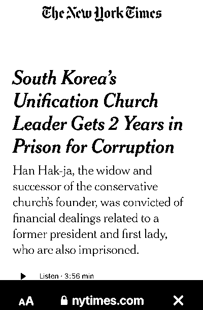
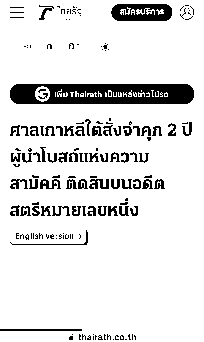
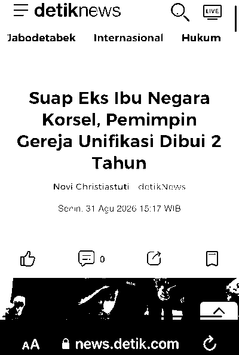
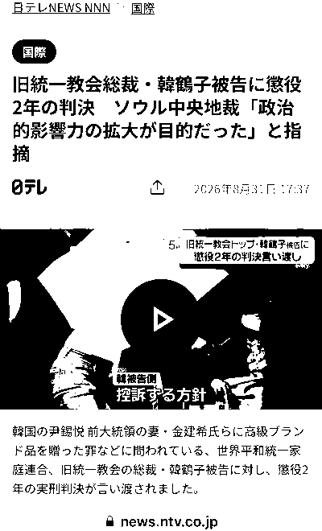
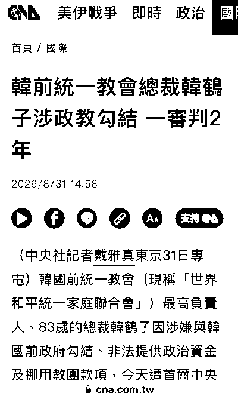
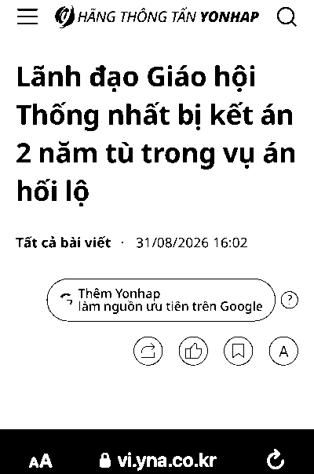
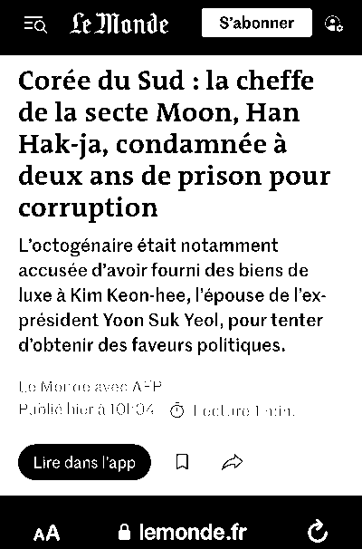
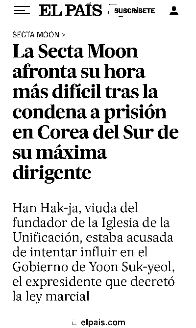
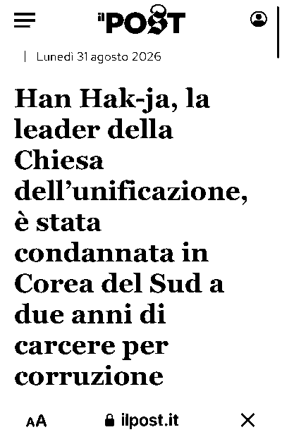
로손에 관한 문제에 대해선 다음과 같이 대응해 갈 생각입니다. 문제의 사람은 아침에 일한 적이 많게 보이는데 이른 아침엔 셀프 계산대가 가동하니 아마 아침에 그 편의점에 갔다고 해도 소용없을 것입니다. 그래서 가능한 한 매일 오후에 로손에 가고 뭔가 살 것인데요. 로손에서 WAON 사용했을 때의 이력은 이른 아침에 사용했을 경우 그 다음날 아침에 나지만 오후에 사용했을 경우엔 이틀 지난 후에 나니까, 아마 그 동안에 이 지역에 살고 있는 사람들이 저를 박해할 것입니다. 저는 이런 이유로 오후에 로손에서 물건을 샀을 때의 영수서 사진은 그 다음날 오후에 공개하기로 합니다. 그래서 매일 전날에 로손에서 산 일에 대해 말할 것입니다.
오늘은 특별히 부엌 영상을 냈어요. (아이들이 너무 무섭기 때문에)
https://drive.google.com/file/d/1GKH1bDoh9V-sa5UVYEYCof2QlrTdwQBK/view?usp=drivesdk
https://drive.google.com/file/d/1KAVlRO7YkbA5k8mKg3_kSbc4lmtQMpfU/view?usp=drivesdk
もしかすると以前紹介した法院爆破予告メールの送信者が本当に私なのではないかという噂が流れているのかも知れませんが(子供というのは悲しいほどに非現実的な噂の影響を受けやすいものです)、下記記事によると最近明らかになった情報によれば、同様のメールは24日にソウル市役所(市庁)にも送られていたとのことです。
지난 26일 전국 법원 40여곳이 폭발물 설치 협박 메일을 받은 데 이어, 오늘(31일) 서울시청에 자살 폭탄 테러를 예고한 협박 메일이 지난주 전송된 것으로 확인됐습니다. 서울시는 지난 24일'주의-폭탄을 설치했습니다'라는 메일을 받아 경찰과 공조하고 있다고 밝혔습니다. 해당 메일에서는 오늘(31일) 서울시청 테러를 예고한 것으로 알려집니다. 폭발물이 발견되지는 않았지만 만일에 대비해 청사 출입과 보안을 강화했다고 덧붙였습니다. (中略) 경찰은 피의자 특정을 위해 해외 공조 수사까지 벌이고 있지만 아직 범인을 잡지 못했습니다. 협박이 실제 범행으로 이어진 경우는 없었지만, 공권력이 낭비되고 사회적 비용이 증가한다는 우려가 나옵니다.
(8. 31) [단독] 또 ‘가라사와’ 이름으로 서울시청 폭파 협박...청사 출입 보안 강화
https://news.jtbc.co.kr/article/NB12315882
あと私がある時期から近所のローソンに行かなくなったのは特定の信じられないほど態度の悪く愚鈍な店員がいた為です。(今朝いた方ではありません) ただ店員ないし店自体が何か別の説明をしようとした形跡も見られます。(例えば以前は早朝にも稼働していなかったセルフレジが挙げられます) これについても何か対策を行ってみます。
下記はいずれも韓鶴子 懲役2年についての記事です。私はこのような活動が金健希の大法院(最高裁)判決が早期に下されることに寄与することを願っています。(私がそのように考える理由は、恐らく皆様は分からないでしょうから説明しません)
'Moonies' church leader jailed for two years over bribery offences
https://www.bbc.com/news/articles/c8xkqjdk142o
South Korea’s ‘moonies’ church leader sentenced to jail in former first lady bribery case
South Korea’s Unification Church Leader Gets 2 Years in Prison for Corruption
https://www.nytimes.com/2026/08/31/world/asia/south-korea-unification-church-leader-prison.html
旧統一教会総裁・韓鶴子被告に懲役2年の判決 ソウル中央地裁「政治的影響力の拡大が目的だった」と指摘
https://news.ntv.co.jp/category/international/5d28f2ca0dc54b8aa3d6ea8436a7d206
ศาลเกาหลีใต้สั่งจำคุก 2 ปี ผู้นำโบสถ์แห่งความสามัคคี ติดสินบนอดีตสตรีหมายเลขหนึ่ง
https://www.thairath.co.th/news/foreign/2956470
Suap Eks Ibu Negara Korsel, Pemimpin Gereja Unifikasi Dibui 2 Tahun
韓前統一教會總裁韓鶴子涉政教勾結 一審判2年
https://www.cna.com.tw/news/aopl/202608310158.aspx
Lãnh đạo Giáo hội Thống nhất bị kết án 2 năm tù trong vụ án hối lộ
https://vi.yna.co.kr/view/AVI20260831000900880
Corée du Sud : la cheffe de la secte Moon, Han Hak-ja, condamnée à deux ans de prison pour corruption
La Secta Moon afronta su hora más difícil tras la condena a prisión en Corea del Sur de su máxima dirigente
Han Hak-ja, la leader della Chiesa dell’unificazione, è stata condannata in Corea del Sud a due anni di carcere per corruzione
https://www.ilpost.it/2026/08/31/hak-ja-han-condanna-carcere-chiesa-unificazione/
これは朝日新聞の9/1朝刊の社会面にあった記事ですが、恐らくどの新聞も報じていると思うのでよく読んでみて下さい。金健希が被告人だとはどこにも書かれていません。
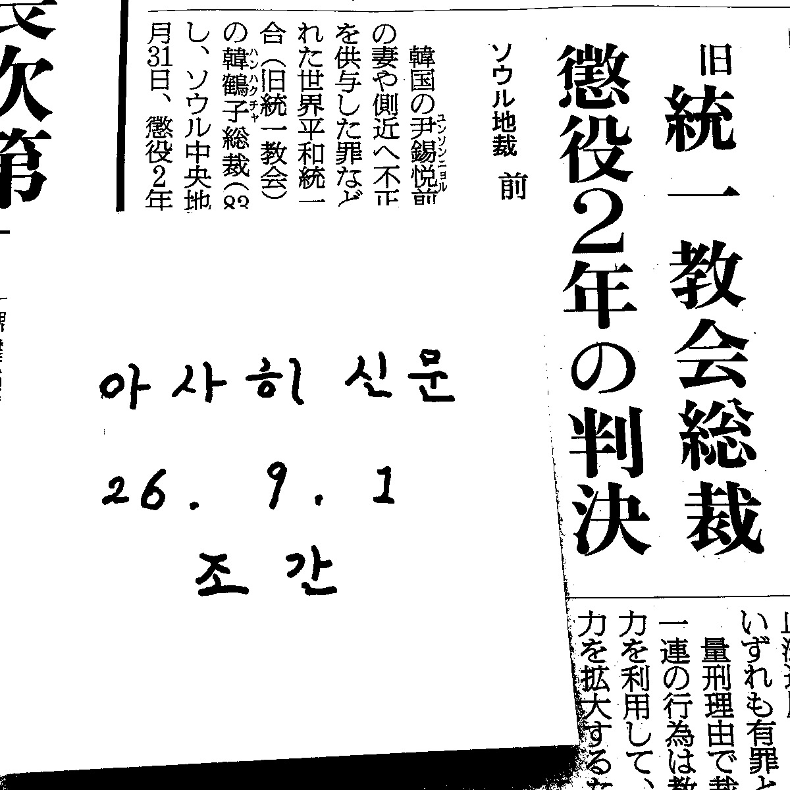
아이들이 저를 박해하니까 좀 방침을 바꾸고 영상 등도 내기로 할 수도 있는데요. 다만 오늘은 거의 내지 않을 것인데 마르야스에는 오전 9시경에 갑니다.
昨日作った画像に書かれていた'Family Federation for World Peace and Unification'という言葉が原因で何か噂が流れたかも知れませんが、これは統一教会の現在の正式名称である「世界平和統一家庭連合」(세계평화통일가정연합)の英語表記です。
https://drive.google.com/file/d/14K8iy2joknqXmVC-RC-heexwkBeXynYr/view?usp=drivesdk
https://drive.google.com/file/d/1RfcX2oaoUAgThs2bGdXxUpm7F9HMVvPz/view?usp=drivesdk
https://drive.google.com/file/d/1nHk7SuJ-qaFZSw1Dz34wZ69CoNG65I2q/view?usp=drivesdk
26. 8. 31
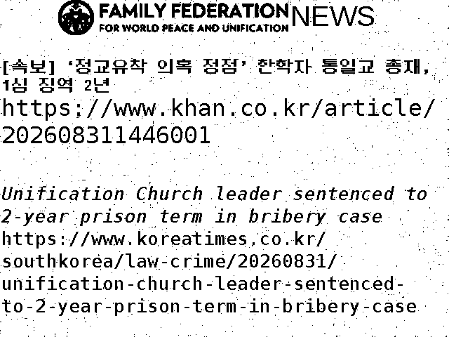
오늘 법원이 한학자에게 첫 유죄판결을 내렸으니 법관들이 힘입어서 김건희의 사건에 대해서도 일하기로 해 주시면 되는데요. 김건희이라는 사람은 아무것도 아닌 사람이니까 전원이 힘내면 아무도 두려울 필요 없이 봉인할 수 있을 것입니다. 저는 만약 대법원이 김건희에 대해 유죄판결을 내면 돈이 없는데도 다시 한번 대한민국을 방문할 생각인데요.
下記はいずれも韓鶴子の判決についての記事です。
[속보] ‘정교유착 의혹 정점’ 한학자 통일교 총재, 1심 징역 2년
https://www.khan.co.kr/article/202608311446001
Unification Church leader sentenced to 2-year prison term in bribery case
韩国统一教头目被判2年
https://m.163.com/dy/article/L5LR9Q7I05198CJN.html
旧統一教会総裁の韓鶴子被告に懲役２年判決 尹前政権に金品提供―韓国地裁
https://www.jiji.com/sp/article?k=2026083100571&g=int
韓鶴子ですが、懲役2年の判決が出たそうです。
서울중앙지법 형사합의27부(부장판사 우인성)는 오늘(31일) 한 총재에게 정치자금법 위반 등 혐의로 징역 1년을, 청탁금지법 위반과 업무상 횡령 혐의에 대해서는 징역 1년을 각각 선고해 모두 징역 2년을 선고했습니다.
[속보] ‘김건희 청탁 등 혐의’ 한학자 총재 1심 징역 2년…“교세 확장 기회로 삼아”
https://news.kbs.co.kr/news/mobile/view/view.do?ncd=8650446
South Korea court finds Unification Church leader Han guilty
恐らくアメリカがイランに攻撃をしたことや、北朝鮮がアメリカを非難する声明を出したことなどは今日あった下記のような会議と関係があったのではないかと想像しています。何かある度に私に八つ当たりするのはいい加減に止めて下さい。
Russia's Putin and China's Xi to attend summit in Kyrgyzstan
習近平国家主席がSCOサミット出席とキルギス国賓訪問のためビシュケク到着
http://j.people.com.cn/n3/2026/0831/c94474-20494158.html
今日開かれる宣告公判(선고공판)に出席する韓鶴子の写真が出ていましたが、やはり法廷内の映像は出ないと思います。
법원 선고 공판 출석하는 한학자 총재
https://mobile.newsis.com/photo/NISI20260831_0021417276
結果が出るのはやはり午後3時以降になるのではないかと(金健希の過去の例から)想像していますが、皆様も下記リンクを定期的にクリックして調べてみて下さい。
https://news.nate.com/search?q=한학자
https://news.nate.com/search?q=%ED%95%9C%ED%95%99%EC%9E%90
曺(조)大法院長のこのようなニュースがあり、大法院(最高裁)が審理する金健希の事件についての進捗はしばらく無いだろうと思われるので代わりに韓鶴子の宣告公判についてのニュースを紹介します。このように日本のニュースサイトにも記事が出ていました。
世界平和統一家庭連合（旧統一教会）と韓国政界の癒着疑惑を巡り、政治資金法違反や特定経済犯罪加重処罰法違反（横領）などの罪に問われた旧統一教会トップのハン・ハクチャ（韓鶴子）総裁に対する第1審の判決公判が31日午後、ソウル中央地裁で開かれる。(中略) 起訴状などによると、ハン・ハクチャ氏は教団幹部らと共謀し、2022年1月に当時の与党「国民の力」の元議員に現金1億ウォン（約1100万円）の政治資金を渡したほか、同年3〜4月には教団資金約1億4400万ウォンを与党議員らに寄付したとされる。さらに同年7月、ユン・ソンニョル（尹錫悦）大統領（当時）の妻キム・ゴニ（金建希）氏側に高級ダイヤモンドネックレスなど計8000万ウォン相当の金品を供与した疑いや、これらの資金捻出のために教団マネーを横領した罪などに問われている。 また、2022年10月に米ラスベガスでのカジノ遠征賭博疑惑に関する捜査情報を得た後、証拠隠滅を指示したとされる罪も含まれている。(中略) ハン・ハクチャ氏は、健康上の理由から勾留の執行停止決定を受け、現在は病院に入院している。
韓国・旧統一教会の韓鶴子総裁、きょう一審判決…懲役計13年を求刑（KOREA WAVE）
https://news.yahoo.co.jp/articles/c8257ef98228ac44e56be958d67d483814145de2
この記事に「また、2022年10月に米ラスベガスでのカジノ遠征賭博疑惑に関する捜査情報を得た後、証拠隠滅を指示したとされる罪も含まれている」とあり気になって調べてみると代わりに下記のような記事が見つかりました。ラスベガス在住の信者たちも今日の宣告公判を見守っているようです。(私は信者ではありませんが)
先に述べたように曺(조)희대大法院長が大法院(最高裁)の裁判官補充について自らの立場を明らかにされるとのことでしたが、身内に不幸があったとのことでこの「立場の発表」も延期されるとのことです。
조 대법원장은 지난 28일 이번주 중 청와대의 대법관 후보 재제청에 대한 입장을 내놓겠다고 밝혔지만, 이번 부친상으로 일정이 연기될 것으로 보인다.
조희대 대법원장 부친상…재제청 입장 연기될 듯
https://www.hani.co.kr/arti/society/society_general/1275420.html
下記記事もこのことについて述べています。
앞서 국회 법제사법위원회는 조 대법원장이 이날 예정된 현안질의에 불출석 사유서를 제출하자 법적 조치를 시사했으나, 부친상으로 국회 출석은 불가능한 상황이 됐다.
조희대 대법원장 부친상…"외부 조문은 안 받기로"
https://www.yna.co.kr/view/AKR20260831024900004
Chief Justice Cho Hee-dae's Father Passes Away... "No External Mourners"
https://mnews.sbs.co.kr/english/article.do?newsId=N1008729714
下記記事にも今日判決が下る事件の被告人は「韓総裁と秘書室長のチョン(정)某氏ら」だとしています。また公判の映像が公開されるかについては言及されていません。KBSは金健希の全ての宣告公判を中継しましたから、今日の韓鶴子の宣告公判が中継される場合にはその旨が記されるはずです。
서울중앙지방법원 형사합의27부는 오늘 오후 2시 10분 정치자금법 위반 등의 혐의로 기소된 한 총재와 비서실장 정 모 씨 등의 선고 공판을 진행합니다.
(拙訳) ソウル中央地方法院 刑事合議27部は今日午後2時10分政治資金法違反等の容疑で起訴された韓総裁と秘書室長のチョン(정)某氏らの宣告公判を執り行います。
‘정교유착 의혹’ 한학자 총재 오늘 1심 선고
https://news.kbs.co.kr/news/mobile/view/view.do?ncd=8649959
今日判決が下る事件(A)と金健希も被告人に含まれている事件(B)それぞれについて英語の記事を引用しますので、比較してみて下さい。これをお読みになればこれらは別の事件だとお分かりになると思います。また韓鶴子の事件については日本でも関心が高いので今日の判決については報道がなされると思います。それらをご覧になれば疑問は解消するかも知れません。
(A) Han is accused of handing over 100 million won in cash to People Power Party lawmaker Kweon Seong-dong around the time of the 20th presidential election and making "split donations" totaling 140 million won to lawmakers affiliated with the People Power Party. She is also facing charges of delivering expensive luxury goods, such as a Graff necklace, to Kim Keon-hee.
(8. 31) First-to-1st Instance Ruling Today for Unification Church Leader Hak Ja Han on Collusion Allegations; Special Counsel Seeks 13-Year Prison Term
https://mnews.sbs.co.kr/english/article.do?newsId=N1008729178
(B) Kim is standing trial alongside Unification Church leader Han Hak-ja, Jeon Seong-bae — a shaman known as Geon Jin — and others on charges of violating the Political Parties Act. Kim was indicted by the special counsel team led by Min Joong-ki on charges of conspiring with Jeon around November 2022 to ask Yun Young-ho, the Unification Church's then-World Headquarters chief, to have church members join the PPP en masse.
(8. 21) Former first lady denies role in mass PPP enrollment scheme
韓鶴子の1審 宣告公判は今日午後2時頃に始まるそうです。よく分かりませんが1-2時間後くらいに結果が出てくるかと思います。ちなみに今回判決が出るのは韓鶴子や統一教会関係者に関係する事件であって、韓鶴子が金健希とつるんで信徒らを「国民の力」に入党させた政党法(정당법)違反事件ではありません。
서울중앙지법 형사합의27부(우인성 부장판사)는 이날 오후 2시 10분 한 총재의 정치자금법 위반 등 혐의 사건 선고 공판을 연다.
'尹정부와 정교유착 혐의' 한학자 통일교 총재 오늘 1심 선고
https://www.yna.co.kr/view/AKR20260830043400004
어젯밤에 꾼 꿈 속에서 아마존 물류센터에 계셨을 때의 당신을 만났습니다. 오늘도 오전 9시경에 마르야스에 갑니다.
昨日述べた조(曺)희대大法院長が発表することになる立場というのはどうやら現在欠員になっている大法院(最高裁)の裁判官の補充をどのような方式で行うかについての立場になるようです。曺大法院長がどのような方式をとるかにより恐らく金健希に対する判決が下される時期も変わると思われます。
대법관 제청이 반려돼 다시 제청할 경우 어떤 절차를 밟아야 하는지에 관한 별도 규정은 없다. 선택은 결국 조희대 대법원장의 몫인데, 선택지는 크게 두 가지다. 우선 대법관 추천위를 새로 꾸려 제청 절차를 처음부터 다시 진행하는 방법이 있다. 법원조직법은 대법원장이 후보자를 제청할 때마다 추천위를 구성하도록 하고, 추천을 마치면 해산한다고 정한다. 이에 법원 내에서도 새 추천위를 꾸려 절차를 밟아야 한다는 견해가 지배적이다. 다만 인선 작업이 그만큼 지연되기 때문에 이미 반년째 이어진 대법관 공석이 더 길어진다는 점이 문제가 될 수 있다. 다른 하나는 손봉기 부장판사와 함께 추천됐던 김민기 고법판사, 박순영 고법판사, 윤성식 부장판사 중 한 명을 골라 제청하는 방안이다. 청와대의 요구를 일정 부분 수용해 갈등을 봉합하고, 공석을 비교적 빠르게 해소할 수 있다는 장점이 있다.
다시 사법부로 넘어온 공…조희대, 초유의 ‘대법관 재제청’ 어떻게 풀까
https://www.khan.co.kr/article/202608310600071
26. 8. 30
조희대 대법원장이 '국민 여러분께 심려를 끼쳐 송구하다'고 하면서 이번주에 '대법관 재제청 요구에 대한 입장'을 밝히기로 했다는데요. 잘은 모르겠지만 '대법관 재제청'이 잘 될 경우 대법원이 김건희에 대한 전원합의 기일을 더 이상 연기하는 이유가 없을 것이라고 보입니다. 조 대법원장은 '국민 여러분'에 대해 이 일에 대한 입장을 밝히겠다니까 우린 우선 그걸 봐 보야 합니다. 물론 저도 뉴스가 되면 그걸 확인해 보요.
下記は今日出た記事ですが、ここにも大法院(最高裁)が金健希に宣告を下す期日はまだ指定されていないとあります。(사건이 전원합의체에 회부된 지 약 1개월이 지난 현재까지도 기일은 지정되지 않았다) それどころか、このまま大法院が10月まで宣告を怠っていれば拘束期間が満了し金健希が拘置所から出てしまう可能性があるとも述べています。
대법관 임명을 두고 청와대와 사법부 간 갈등이 장기화하면서 자칫 대법원장이 재판장을 맡는 전원합의체 사건 처리가 늦어질 수 있어 대법원장의 부담도 커지고 있다. 특히 전원합의체에 회부된 김건희 여사 사건의 경우 구속기간 만료가 두 달 앞으로 다가온 만큼, 심리가 장기화할 경우 구속 상태 유지하기 어려워질 가능성도 거론되고 있다. 30일 법조계에 따르면 대법원은 지난달 23일 자본시장과 금융투자업에 관한 법률 위반, 정치자금법 위반, 특정범죄가중처벌 등에 관한 법률 위반(알선수재) 혐의로 기소된 김 여사의 상고심에 대해 "전원합의체에 회부하기 위해 선고기일을 변경·추정(추후 지정)했다"고 밝혔다. 김 여사 상고심 사건에서 구속기간 만료 시점이 2개월 앞으로 다가온 만큼 대법원이 언제 심리를 열고 선고할지가 주목된다. 사건이 전원합의체에 회부된 지 약 1개월이 지난 현재까지도 기일은 지정되지 않았다. 형사소송법 제92조는 피고인을 구속 상태에서 심리할 필요가 있을 때 구속기간을 심급마다 2개월 단위로 2회 갱신할 수 있도록 규정한다. 상소심에서는 증거 조사, 서면 제출 등으로 추가 심리가 필요한 경우 최대 3회까지 갱신이 가능하다. 김 여사 사건은 지난해 9월 1일 공소가 제기됐다. 1심 재판부가 구속기간을 두 차례 갱신하면서 구속기간은 올해 2월 말까지 연장됐다. 이후 2심 재판부가 선고 전 구속기간을 한 차례 갱신해 구속기간은 4월 말까지 늘어났다. 2심 재판부는 선고일(4월 28일) 직후인 4월 29일 김 여사의 구속기간을 다시 한 차례 갱신했고 구속기간 만료일은 6월 말이 됐다. 이는 선고 이후 대법원에 기록이 도착할 때까지 시간을 확보하기 위한 조치로, '대행갱신'이라고도 불린다. 대법원은 지난 6월 15일과 8월 19일 각각 구속기간 갱신 결정을 했다. 이로써 구속기간 갱신 횟수는 모두 소진됐고 김 여사의 구속기간은 오는 10월 말까지로 연장된 상태다.
대법관 갈등 속 김건희 전원합의체 기일 깜깜…'석방' 가능성도 거론
https://www.news1.kr/society/court-prosecution/6273503
다음과 같은 책들을 빌렸어요:
https://drive.google.com/file/d/1ykInc2kxeUpsfBbwYoCFfTagQG0WJQzS/view?usp=drivesdk
https://drive.google.com/file/d/1L5gb9o_H5tu1C7Vf7BXvme99PKyegeiz/view?usp=drivesdk
방으로 돌아왔습니다:
https://drive.google.com/file/d/1-qRLkRQiGZOT0hiCw9SSp0aZv0HZyRYI/view?usp=drivesdk
https://drive.google.com/file/d/1rxMFawRLlUaOXimrjt1VyGk0BRpyaSW6/view?usp=drivesdk
아마 한 일본 사람이 거짓을 했을 것인데요 제가 하프 씨에 대해 말한 건 제 때문에 트럼프 대통령이 화내셨다 같은 소문을 내는 아이들이 있었기 때문이고 제가 전에 있던 회사와는 무관합니다.
恐らく今回噂を流しているのもクロネコヤマトの例の契約社員と同種の人間だと思うのですが、皆様に確認して頂きたいのはそういった方が噂を流す際に皆様の心身にどのような変調が生じるかということです。私が知る限り、普段温厚な方が突然私に怒鳴りかかって来られたりすることが起こり得ますが、噂が一段落すると元に戻りどうしてそのような事をしたのかご自身でも分からないようです。そういった噂が流れている間に皆様は言いようのない不快感や苛立ちを感じるでしょうが、それらが私に対してではなく皆様の周囲に対してぶつけられることもあるかと思います。同じようなことはこれまでにも何度もあり、しかも噂を流していたのはいつも同一の人物ではありませんでした。まず皆様が覚えている直近の事例を思い出してみて下さい。
今回どのような噂が流れているのか考えてみましたが、今日が日曜日であることと、昨日の私の言動を踏まえ大方私がどこかに外出するのではないかと推測した上での噂だったのではないかと思います。ですので今日は外出を控えてこの地域に滞在しているという証拠を数点残すことにします。
正午から午後1時までの間にマルヤスにもう一度行き、少額の買い物を行います。その後その足で図書館に行き現在借りている返却期限前の図書を一旦全て返却することにします。その後また2, 3冊を借ります。
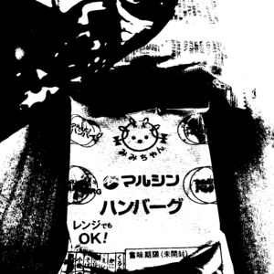
先日下記のような記事が出ていたので、조(曺)희대大法院長が辞任を発表されるのではとの噂が流れたのかも知れませんが、この記事にもあるように大法院長が発表することとなる立場(입장)とは質問にあった「대법관 재제청 요구에 대한 입장」つまり「大法官の再・提請(제청)要求についての立場」です。記事のタイトルに惑わされないで下さい。
조희대 대법원장은 28일 청와대의 대법관 후보 재제청 요구에 “국민 여러분께 심려를 끼쳐 송구하다”며 내주 공식 입장을 밝히겠다고 말했다. 조 대법원장은 이날 오후 6시 11분께 서울 서초구 대법원 청사 퇴근길에 취재진과 만나 ‘대법관 재제청 요구에 대한 입장’에 대한 질문에 “우선 국민 여러분께 심려를 끼쳐 송구하다”며 “자세한 내용은 검토 중”이라고 답변했다. 이어 “다음 주 중 정리가 되면 공식적으로 알려드리겠다”고 덧붙였다.
[속보] 조희대 대법원장 “심려 끼쳐 국민께 죄송…내주 공식입장 낼 것”
https://www.mk.co.kr/news/society/12139118
下記は明日開かれるという韓鶴子の宣告公判についての記事です。私が韓鶴子のことが好きだという噂は流れてはいないでしょうが、金健希の事件にも関係すると思うので紹介しました。
서울중앙지법 형사합의27부(부장판사 우인성)는 오는 31일 오후 2시 10분 한 총재와 정원주 전 통일교 비서실장 등에 대한 정치자금법·특정경제범죄가중처벌 등에 관한 법률 위반(횡령) 등 혐의 선고기일을 진행한다. 김건희특검팀(특별검사 민중기)은 지난달 결심공판에서 한 총재의 정치자금법 위반 혐의에 대해서는 징역 5년을, 나머지 혐의에 대해서는 징역 8년을 선고해달라고 요청했다. (中略) 특검팀은 "한 총재 등은 종교적 이권 및 영향력을 확대하고자 정교일치의 실현을 목표로 막대한 자금력을 이용해 공권력을 위법 부당하게 이용했다"며 "헌법 정신에 정면으로 위반하고 대의민주주의를 훼손한 중대한 범행"이라고 했다. 이어 "종교단체 최고위층인 한 총재 등은 교인이 자발적으로 낸 헌금을 사적으로 사용하고 정치 세력과 부정하게 결탁해 대한민국에 영향을 미치려 했다"고 주장했다. 그러면서 "다시는 통일교와 같은 종교단체의 불법 정교유착과 국정농단이 일어나지 않도록 엄중한 형을 선고해 달라"고 밝혔다. 한 총재는 최후진술에서 사과의 뜻을 표하면서도 정교유착과 금품 제공 혐의를 사실상 부인했다. (中略) 지난해 구속기소된 한 총재는 건강 문제로 법원의 구속집행정지 결정을 받아 병원에 머물고 있다. 구속집행정지 기한은 내달 2일 오후 6시까지다.
'통일교 정교유착' 한학자, 이번주 1심 선고[주목, 이주의 재판]
https://www.news1.kr/society/court-prosecution/6272895
下記は今週の裁判スケジュールです。
31일(월) 서울중앙지법, ‘특정경제범죄가중처벌등에관한법률위반(횡령) 등 혐의’ 한학자 통일교 총재 외 3명 선고(오후 2시 10분) ... 韓鶴子の宣告公判だそうです
3일(목) 대법원 1부 선고(오전 10시, 제2호 법정) ... 大法院の宣告ですが、「1부」(いくつかある裁判部をこのように数字で表しています)とあるので全員合議体が審理する金健希の事件とは無関係と思われます
(이번주 법조 일정) 8월 31일~9월 4일
https://www.lawtimes.co.kr/news/articleView.html?idxno=225565
어젯밤에 꾼 꿈 속에서 나이를 드신 일본 사람이 트럼펫으로 장송 행진곡을 연주하려고 했는데요 너무 이상한 멜로디였습니다. 오늘도 오전 9시경에 마르야스에 가요.
昨日述べた記事の続編があったのでこれも紹介しておきます。
トランプ大統領は携帯電話やパソコンより紙を好むため、ハープ氏はバッテリー式プリンターを持って大統領の後をついて回り、トランプ大統領を称賛する投稿や、彼を好意的に描く記事を印刷して手渡していた。彼女は大統領執務室でも、大統領所有のクラブでも、外国訪問中でも常にトランプ大統領の側にいた。このことから、彼女には「人間プリンター」というニックネームが付けられた。 ハープ氏は、トランプ大統領が受け取る情報を事実上管理する立場にあった。トランプ大統領の意思決定は、戦略的な考慮よりも「世間が自分をどう見ているか」に左右される傾向がある。トランプ大統領は「誰もが私のやっていることを気に入っている」「私の支持率は最高だ」と繰り返し口にしている。どの情報を大統領に渡すかは、彼女の判断で決まった。 (中略) サージェント氏は「ナタリーがどんな時でもトランプ大統領に喜びを与えているのなら、大統領への批判が彼の耳に届くのを許さないだろう。ここで言う批判には、共和党議員からのものや、政権内部の人物が政策上の重大な問題を知らせようとして流すリークも含まれる」と述べ、偏った情報提供の危険性を指摘している。 (中略) 急速に注目を集める中、ハープ氏には新たなスキャンダルが浮上した。彼女はホワイトハウスで働いていた1年以上の期間、セキュリティー・クリアランス（秘密取扱資格）の取得を繰り返し拒んでいたと報じられた。 ホワイトハウスのセキュリティー・クリアランスは国家機密にアクセスする資格であり、ホワイトハウス職員、大統領補佐官、国家安全保障会議（NSC）スタッフなどが取得する必要がある。取得には厳しい身辺調査が行われ、犯罪歴、財政状況、外国との関係、薬物使用歴、虚偽申告の有無、信頼性・忠誠心などが確認される。ホワイトハウス西棟の職員は勤務開始後速やかにクリアランスを取得する必要がある。 しかしハープ氏は複数回にわたり手続きを延期していたと報じられている。クリアランスを受けないまま、大統領に極めて近い立場で執務し、移動にも同行していた。しかも彼女は単なる秘書官ではなく、大統領に提出する書類の管理、面会者の選別、トランプ大統領と常に行動を共にするなど、「ゲートキーパー」と呼ばれるほどの影響力を持つ立場にある。なぜ彼女が手続きを取らなかったのか、またトランプ大統領がそれを容認したのかは不可解である。 (中略) ハープ氏の影響力が強まれば、トランプ大統領の意思決定にも影響が及ぶ可能性がある。情報が偏り、緊急時の判断が狭い視野に陥る懸念もある。彼女がトランプ大統領に都合の良い情報を選択し、判断に影響を与えていると考えられる。政策判断が専門的助言より「忠誠心の高い側近の意見」に傾く可能性もあり、外交・安全保障・経済政策の質が低下するとの懸念が出ている。 また、危機時に必要な専門家（外交・軍事・情報）が不在のまま大統領が意思決定を行う可能性や、情報の質が低下し判断が感情的・即興的になる可能性もある。最近のトランプ大統領の情報発信を見ると、一貫性に欠ける印象が強い。 ハープ氏を陰謀論者と断定する根拠はないが、陰謀論や未確認情報を含むコンテンツをトランプ大統領に提供したり、「Truth Social」で発信したりする役割を担っている。ハープ氏とトランプ大統領の異常な近接性は、メディア戦略を「制度的・戦略的」から“攻撃的・即興的・陰謀論的”へと構造的に変質させている。これは政権の対外メッセージの安定性・信頼性にとって重大なリスクである。 ハープ氏の存在をベースにトランプ大統領の行動を理解すると、納得する部分が多い。世論調査で支持率が低下するトランプ大統領にとって、ハープ問題でさらに窮地に追い込まれる可能性がある。
【米国最新情報：139】トランプ大統領の側近ナタリー・ハープは何者か（２）：情報を支配する影の存在（中岡望） - エキスパート
https://news.yahoo.co.jp/expert/articles/786806f0be2128b4f9fe5e205ece9637e809c15a
昨晩自室内で呟いた内容は下記記事に関するものです。以前から述べているように自室内で何を呟くかは個人の自由であり、表現の自由以前の問題です。また中国政府が報道を制限することと中国の方々とは無関係です。私は中国のことについては韓国人である彼女と結婚してから話し合えればと思っています。その日が来るまではノーコメントとします。(自室内での呟きは言うまでもなく私の正式な意見とはなりません)
Beijing has launched a massive rescue operation involving hundreds of emergency workers, which is continuing, and President Xi Jinping chaired an emergency meeting with officials to co-ordinate efforts. But when you compare the country's internet content to what much of the world has been seeing online these past few days, China's firewall becomes more visible than ever. (中略) This is not to say that Beijing is unconcerned. Rather, they are very concerned. China's Premier Li Qiang was quickly despatched to the region, where he was seen inspecting debris removal - a rare visit by the country's second-most important leader so soon after a major disaster. The reason for what the world might see as a muted response is to preserve the one thing Xi covets for his country: stability. The Communist Party will fear that such a disaster could fuel discontent, either with the response or the lack of foresight to prevent it. It may also fear the impact of a tragedy like this and its potential to be a rallying factor, especially in a community where faith has long played a central role.
Footage of Tibet floods isn't being shown in China - and we know little about victims there
https://www.bbc.com/news/articles/cx2z415w2gpo
下記の記事によると26日に韓国各地の裁判所に対する爆破予告があり、一部の裁判が中止される事態が発生していたそうです。中止されたのがどの裁判かは分かりませんが、これが原因で何か噂が流れたのかも知れません。(私の見当違いかも知れませんが) ただそもそも先週あった公判の被告人(特に韓鶴子)の映像はほとんど公開されないものなのです。金健希(김건희)についての記事の探し方は以前お伝えしましたね。皆様も少し時間を使えば調べることが可能ですから、調べてみて下さい。
[앵커] 오늘(26일) 전국 주요 법원에 "폭발물을 설치했다"는 협박 메일이 전해져 재판이 중단되고 사람들이 대피하는 소동이 벌어졌습니다. (中略) [기자] 네, 오늘 '폭탄 테러' 협박 메일을 받은 법원은 전국에서 40여 곳에 달합니다. 서울동부지법과 인천지법, 청주지법과 전주지법, 부산고법 등 전국 주요 법원 대부분에 "사제 폭탄을 설치했다"는 협박이 메일을 통해 전해졌는데요. (中略) '폭파 협박'은 단순 해프닝으로 마무리됐지만, 일부 법원에서는 재판이 중단되고 직원들과 시민들이 대피하는 소동이 벌어지기도 했는데요.
(8. 26) 전국 40여 개 법원에 '폭파 협박'…재판 중단·대피 소동